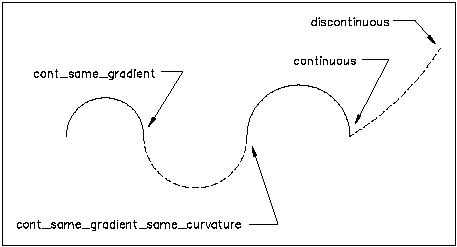

8.9.2.5 IfcTransitionCode
The IfcTransitionCode indicated the continuity between consecutive segments of a curve or surface.
EXAMPLE In ContSameGradient the tangent vectors of successive segments will have the
same direction, but may have different magnitude.
Figure 311 illustrates transition types
NOTE The figure is quoted from ISO 10303-42.
 |
|
Figure 311 — Transition code
|
NOTE Definition according to ISO/CD 10303-42:1992
This type conveys the continuity properties of a composite curve or surface. The continuity referred to is geometric,
not parametric continuity.
NOTE Type adapted from transition_code defined in ISO
10303-42.
HISTORY New Type in IFC1.0
Enumerated Item Definitions:
- discontinuous: The segments do not join. This is permitted only at the boundary of the curve or
surface to indicate that it is not closed.
- continuous: The segments join but no condition on their tangents is implied.
- contsamegradient: The segments join and their tangent vectors or tangent planes are parallel and
have the same direction at the joint: equality of derivatives is not required.
- contsamegradientsamecurvature: For a curve, the segments join, their tangent vectors are parallel
and in the same direction and their curvatures are equal at the joint: equality of derivatives is not required. For a
surface this implies that the principle curvatures are the same and the principle directions are coincident along the
common boundary.
XSD Specification:
<xs:simpleType name="IfcTransitionCode">
<xs:restriction base="xs:string">
<xs:enumeration value="discontinuous"/>
<xs:enumeration value="continuous"/>
<xs:enumeration value="contsamegradient"/>
<xs:enumeration value="contsamegradientsamecurvature"/>
</xs:restriction>
</xs:simpleType>
EXPRESS Specification:
|
|
|
TYPE IfcTransitionCode = ENUMERATION OF (
|
|
|
DISCONTINUOUS,
CONTINUOUS,
CONTSAMEGRADIENT,
CONTSAMEGRADIENTSAMECURVATURE); |
|
 EXPRESS-G diagram
EXPRESS-G diagram
 Link to this page
Link to this page